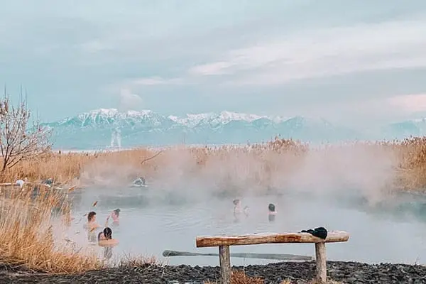
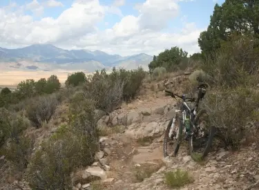
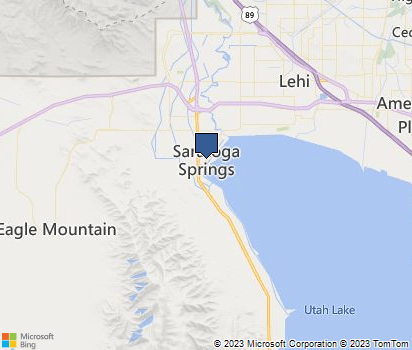

Come and see the New Saratoga Springs Temple
We are so excited to have a Temple in our city. This beatuful building stands out from any direction you want to see. Its gorgeous arquitecture beautifies our city amd makes it even more apealing for new comers.
Saratoga Springs Utah Temple Public open House will go from April 15, 2023 to July 8, 2023. All are welcome to come and see this sacred house of the Lord. Entering the temple is a special opportunity as once it dedicated, only mebers of our faith will be allowed to enter. Admissions are free. Opened Monday-Saturday from 9am- 8pm. Closed on Sundays.
Splash Days, June 7-10
Summers are so fun in Saratoga Springs!! Saratoga Springs Anual Summer Carnival is a four day event for the whole family. Kids splash bash is for kids 12 and under to come and play in the foam and water with the fire department. Also, we have a teen chalk war hosted by the Saratoga Springs Youth council. Live music night, food trucks, outdoor movies and to top it off, Amusement park carnival for the whole family.
Come Relax in our very own Hot Springs
The Saratoga Hot Springs, located just off the northwest side of Utah Lake has a perfect heated hot springs. The hot springs have easy parking and are open all year round. This place is public, and it is open from 6am-10pm. It is a great place to warm up during winter days, and you can see amazing sunsets of the lake and mountain views.
One of the many Outdoor Activities
Looking for Mountain Biking with amazing views? Saratoga Springs and nearby cities have expectacular trails that rage from easy to expert that can get the whole family involved.
Did you Know?
Saratoga Springs is a city in Utah. The elevation is 4,505 feet. It is part of Provo-Orem, Utah Metropilitan Area. The city is relativly new and is located along the northwestern shores of Utah Lake. It was incorporated on December 31,1997 and has been growing rapidly since then. Saratoga Springs became a city in 2001. Saratoga Springs is experiencing exponential growth. The Utah Governor's Office of Economic Development identified Saratoga Springs with the fastest growth rate in the State from 2000-2010 at 1,672.8%. This trend is only continuing. Saratoga Springs was recently identified as the epicenter for growth in Utah, with an average growth rate of 635 residential units, or 2,700 new residents, each year. The City's current population is nearly 38,000 residents and growing far ahead of prior projections. This continued growth will translate into a 35 percent population increase over the next 5 years or 51,000 total residents. At this rate, Saratoga Springs’ population will nearly double in the next 10 years. The latest census data also shows that Saratoga Springs median income of $80,857 is 30% higher than the state median. The average household size in Saratoga Springs is also higher than the state average at 4.19.
Number of days since you visited this page: